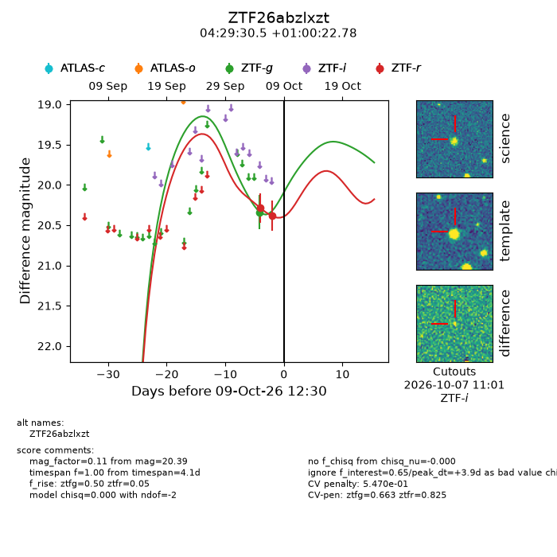
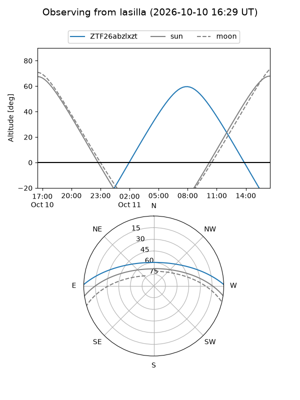
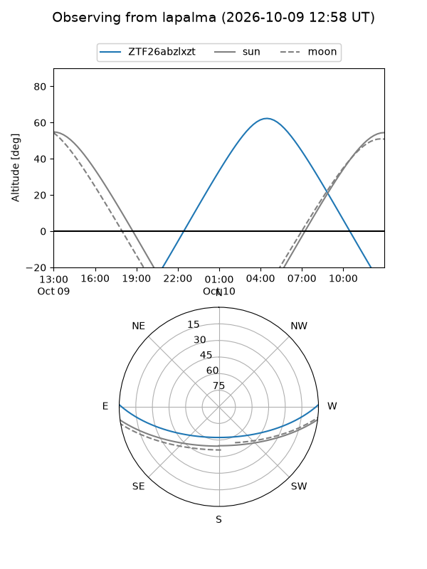
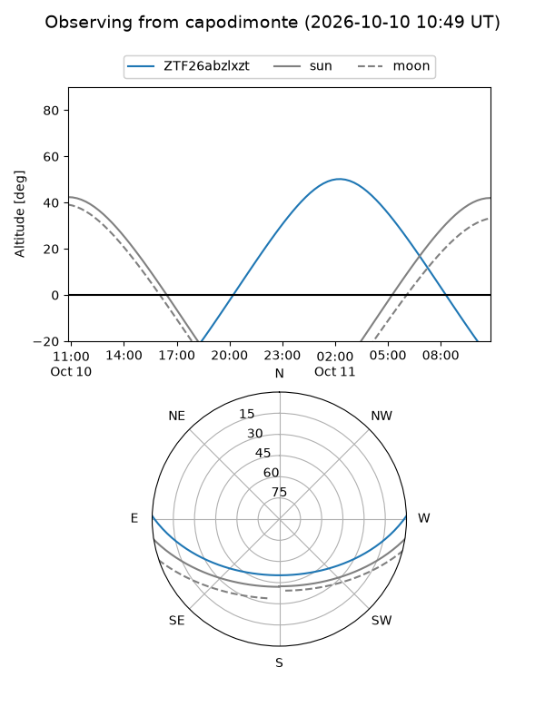
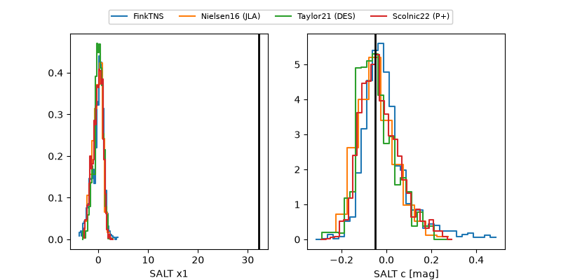

ZTF26abzlxzt
Target ZTF26abzlxzt at 2026-10-09 12:32
Aliases and brokers:
FINK-ZTF: ztf.fink-portal.org/ZTF26abzlxzt
Lasair-ZTF: lasair-ztf.lsst.ac.uk/objects/ZTF26abzlxzt
ALeRCE-ZTF: alerce.online/object/ZTF26abzlxzt
Direct TNS query: direct search
alt names
ZTF26abzlxzt (ztf,fink_ztf)
Coordinates:
equatorial (ra, dec) = 67.3771,+1.00633
equatorial (HMS+DMS) = 04:29:30.50,+01:00:22.78
galactic (l, b) = (193.9366,-30.56450)
Flags:
peak dt: +3.9
likely cv: !!
Photometry:
last ztfg=20.34, ztfr=20.39
1 ztfg, 2 ztfr detections
Lightcurve

Visibility



Additional plots
